第 3 章 ① 波的分類2 題
是。分類的唯一標準：傳播時需不需要介質。
需要介質的叫力學波（水波、繩波、聲波）；不需要介質、在真空中也能傳的叫非力學波（光、電磁波）。重力波能在幾乎真空的宇宙中傳過來，所以是非力學波。
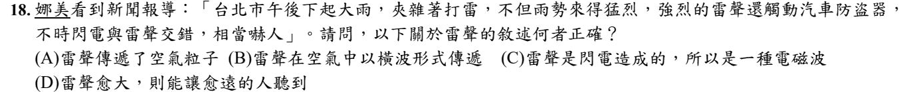
雷聲是聲波 → 力學波、縱波。先把這個身分認清楚，選項就好判斷。
(A) 聲波傳遞的是能量，空氣粒子只在原地前後振動，不會跟著跑過來。
(B) 聲波在空氣中是縱波（疏密波），不是橫波。
(C) 閃電的「光」才是電磁波；雷聲是空氣受熱急速膨脹振動產生的聲波。
(D) 雷聲愈大 ＝ 振幅愈大、能量愈多，傳得比較遠還聽得到 ✓
第 3 章 ② 波的性質6 題
是。抖得愈用力，彈簧被拉離平衡位置愈遠 → 振幅愈大。
振幅由「波源給多少能量」決定；波速則由介質決定，和抖多大力無關。
官方答案：是。波傳過去時，介質各點是一個接一個開始振動的，步調不同——同一瞬間，有的點在最高點（速率 0）、有的點正通過平衡位置（速率最大），所以各點的振動速率不一樣。
⚠️ 補充：嚴格來說，相隔一個波長的兩點步調完全一樣，速率其實相同，「都不相同」講得太滿。本題官方答案是「是」，如果考試遇到類似敘述，請問老師這一題怎麼算。
否。和上一題同一個觀念：介質各點步調不同。同一瞬間，波形上有的點正往上、有的點正往下（下一題 112-17 就在考這個），振動方向不會全部相同。
這題是把 113 年那題的「速率都不相同」改成「方向都相同」——是非題就是改一兩個字，讀題要慢。
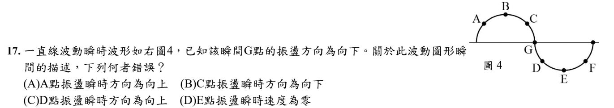
判斷方法：質點下一刻的高度，會變成「波傳來那一側」鄰居現在的高度。
G 正往下，而 G 右邊的鄰居（D）比較低、左邊（C）比較高 → G 是在學右邊 → 波由右往左傳。
接著每個點都看「右邊鄰居」：
A：右邊比較高 → 向上 ✓（(A) 對）
C：右邊是 G，比較低 → 向下 ✓（(B) 對）
D：右邊是 E，比較低 → 向下，(C) 說向上 ✗
E：在波谷，正要回頭，瞬間速度為零 ✓（(D) 對）
題目問錯誤的 → (C)。
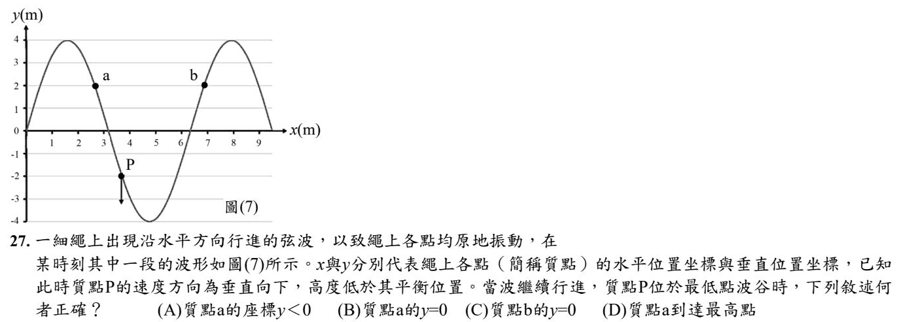
先判斷傳播方向：P 正往下，P 右邊的點比 P 低 → P 在「學右邊」→ 波向左傳。
P 要到波谷，就要讓右邊的波谷（x ≈ 4.7）移到 P（x ≈ 3.7）——整個波形往左平移約 1 公尺。
平移後，每個點的高度 ＝ 現在它右邊 1 公尺那個點的高度：
a（x ≈ 2.7）→ 讀 x ≈ 3.7 的高度，就是現在 P 的高度 −2 → y ＜ 0 ✓
b（x ≈ 6.9）→ 讀 x ≈ 7.9 的高度 → 波峰 4，到達最高點的是 b 不是 a。
所以 (A) 對；(B)(C)(D) 都不對。
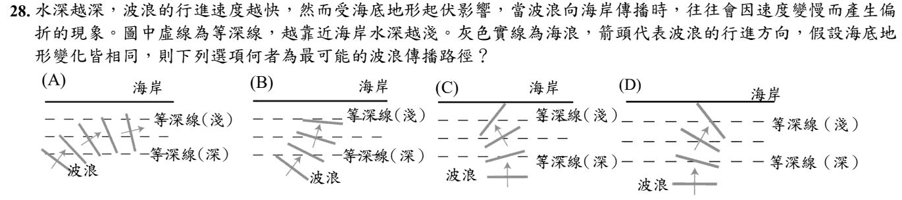
題目給了關鍵：愈靠近海岸水愈淺，波浪愈慢。
斜斜打過來的波浪，靠岸的那一端先進淺水、先變慢，另一端還在深水跑得快 → 波浪會慢慢轉正，波峰線愈來愈和海岸平行、前進方向愈來愈正對海岸 → (B)。
(A) 愈走愈斜，方向反了。(C)(D) 一開始就正對等深線前進，兩端同時變慢，不會轉彎，卻畫成歪掉。
這就是為什麼海浪幾乎都是「正面」打上沙灘的。和光的折射是同一個道理：速率改變 → 轉彎。
第 3 章 ③ 週期與頻率3 題
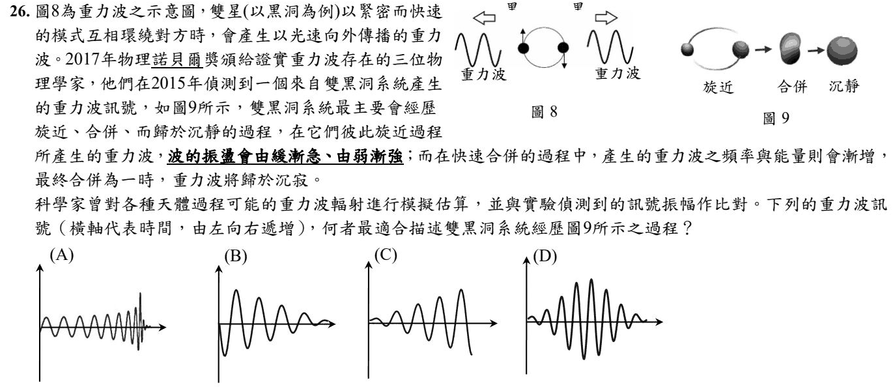
把文章的話翻成波形：「由緩漸急」＝頻率愈來愈高（波愈擠愈密），「由弱漸強」＝振幅愈來愈大；最後合併「歸於沉寂」＝訊號突然結束。
(A) 波愈來愈密、愈來愈高，然後突然收掉 ✓
(B) 振幅愈來愈小，相反。(C) 振幅變大，但疏密沒變（頻率不變）。(D) 先變大再變小，而且頻率沒變。
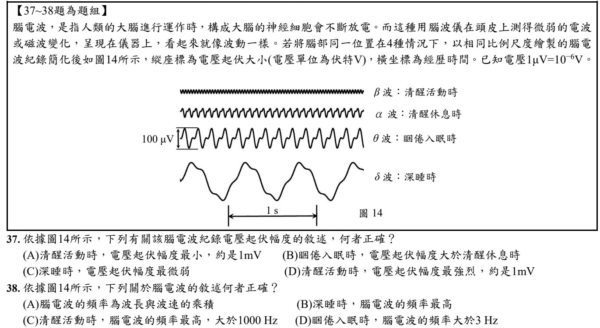
看圖中的比例尺：θ 波旁邊標了 100 μV。四條波用同樣比例畫，直接比高低就是比振幅。
θ 波（睏倦入眠）明顯比 α 波（清醒休息）高 → (B) ✓
(A)(D) β 波最小，但 1 mV ＝ 1000 μV，比 100 μV 還大十倍，數字不對。(C) δ 波（深睡）反而是起伏最大的。
頻率 ＝ 1 秒內有幾個完整的波。圖下方有 1 s 的長度可以對照。
θ 波在 1 s 的長度裡大約有 7 個波 → 約 7 Hz，大於 3 Hz ✓
(A) 頻率 ＝ 波速 ÷ 波長，不是乘積。(B) 深睡 δ 波最稀疏，頻率最低。(C) β 波頻率最高沒錯，但 1 秒內大約幾十個，遠遠不到 1000 Hz。
第 3 章 ④ 週期、頻率與波速的關係4 題
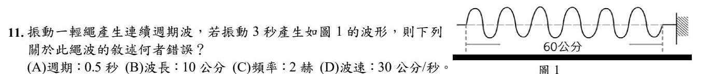
數圖：60 公分裡有 6 個完整的波 → 波長 ＝ 60 ÷ 6 ＝ 10 公分。
3 秒產生 6 個波 → 頻率 ＝ 6 ÷ 3 ＝ 2 赫，週期 ＝ 1 ÷ 2 ＝ 0.5 秒。
波速 ＝ 波長 × 頻率 ＝ 10 × 2 ＝ 20 公分/秒（或 60 公分 ÷ 3 秒）。(D) 寫 30，錯。
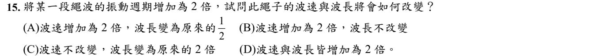
波速由介質（這條繩子）決定，你怎麼甩它都不變。
週期變 2 倍 → 頻率變一半 → 波長 ＝ 波速 ÷ 頻率 → 波長變 2 倍。
(A)(B)(D) 都以為波速會變，第一步就錯了。
否。甩得快只是頻率變大；同一條繩子，波速不變。
頻率變大、波速不變 → 變的是波長變短（波變密）。
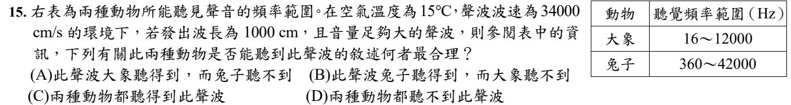
先算頻率：f ＝ 波速 ÷ 波長 ＝ 34000 ÷ 1000 ＝ 34 Hz（單位都是公分，可以直接除）。
大象聽 16～12000 Hz → 34 在範圍內，聽得到；兔子聽 360～42000 Hz → 34 太低，聽不到 → (A)。
第 3 章 ⑤ 聲波產生的條件2 題
否。聲波是力學波，一定要有介質（固體、液體、氣體都行）。真空裡沒有粒子可以推來推去，傳不過去。
真空鐘罩實驗：抽掉空氣，鬧鐘還在振動，但聲音愈來愈小。
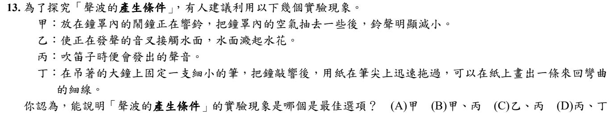
課本的「聲波產生的條件」有兩個：① 發聲體振動 ② 有介質傳播。
甲：抽掉空氣，鈴聲變小 → 證明需要介質（真空鐘罩實驗）✓
乙：音叉碰水濺起水花 → 證明發聲的物體在振動 ✓
丁：鐘上的筆畫出來回彎曲的線 → 也是證明在振動 ✓
丙：吹笛子會發出聲音——只是「有聲音」這個現象，沒有說明任何條件 ✗
四個選項中，只有 (A) 沒有放進丙，所以選 (A)。
⚠️ 補充：照道理「乙、丁」也是好答案，但選項裡沒有這個組合。這題是自行解出的，請問老師這一題怎麼算。
第 3 章 ⑥ 聲速與介質6 題
是。固體 ＞ 液體 ＞ 氣體。粒子排得愈緊密，振動傳得愈快。
大約數字：空氣 340 m/s、水 1500 m/s、鋼 5000 m/s。
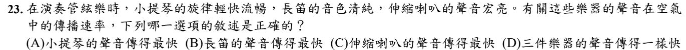
波速由介質決定，不由聲源決定。三件樂器都在同一個空氣裡，所以都是每秒 340 公尺。
可以用一個生活經驗檢查：如果不同樂器的聲音跑得不一樣快，整個樂團從第一排聽起來就會變成一團爛泥——低音先到、高音後到。但實際上不會，所以速度一定一樣。
題目故意把「輕快、清純、宏亮」三個形容詞塞給你，那些講的是音調、音色、響度——沒有一個和速度有關。
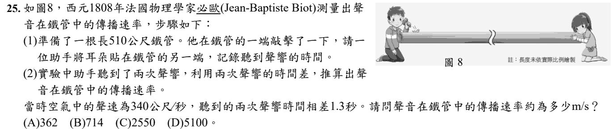
助手聽到兩次聲響：先到的走鐵管（快），後到的走空氣（慢）。
空氣：510 ÷ 340 ＝ 1.5 秒。鐵管比它早 1.3 秒 → 1.5 − 1.3 ＝ 0.2 秒。
鐵管中的聲速 ＝ 510 ÷ 0.2 ＝ 2550 m/s。
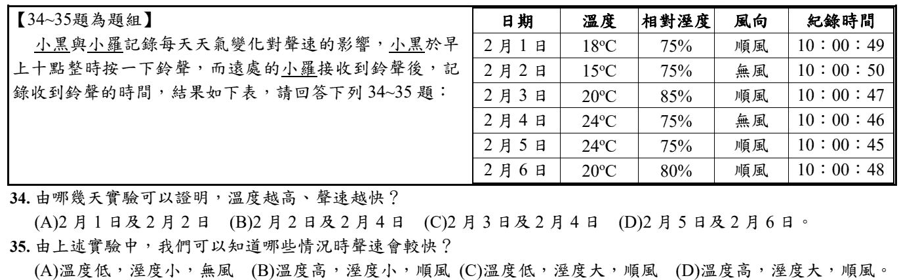
要證明「溫度」的影響，就要找只有溫度不同、其他條件都一樣的兩天（控制變因）。
2/2（15°C、75%、無風）和 2/4（24°C、75%、無風）：只差溫度 ✓。溫度高的 2/4 比較早收到（:46 比 :50）→ 溫度高，聲速快。
(A) 風向也不同。(C) 濕度和風向都不同。(D) 濕度也不同。
一樣用「只差一個條件」來比：
溫度：2/2 vs 2/4 → 溫度高比較快。
濕度：2/3（85%）vs 2/6（80%），其他相同 → 濕度大比較快（:47 比 :48）。
風向：2/4（無風）vs 2/5（順風），其他相同 → 順風比較快（:45 比 :46）。
→ 溫度高、濕度大、順風 → (D)。
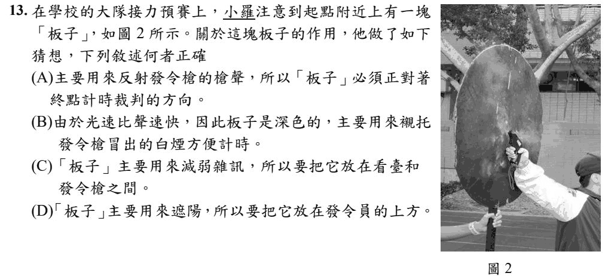
關鍵：光速遠遠比聲速快。
終點的計時員離起點約 100 公尺，槍聲要約 0.3 秒才傳到；但看到發令槍冒煙幾乎是瞬間。所以計時要看煙按錶，不是聽槍聲。深色板子當背景，白煙才看得清楚 → (B)。
(A) 板子不是拿來反射槍聲的。(C)(D) 和計時無關。
第 3 章 ⑦ 聲波的反射與超聲波13 題
否。超聲波是指「頻率」高於 20000 Hz（人耳聽不到）的聲波，和速度無關。
在同一種介質裡，超聲波和一般聲音跑得一樣快。
否。地毯、窗簾、海綿這類柔軟、多孔的東西會吸收聲音，不容易反射。
容易反射聲音的是堅硬、光滑的表面，例如磁磚牆、玻璃。
是。這題就是上一題 113 年是非題第 7 題的「改正版」：地毯柔軟多孔，會吸收聲音 → 不易反射。
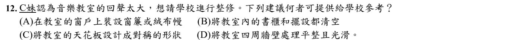
回聲太大 ＝ 聲音反射太多。要減少反射，就加上會吸收聲音的材料 → 窗簾、絨布幔 ✓
(B) 東西清空，空房間回聲反而更大。(C) 天花板形狀對稱和吸音無關。(D) 牆面平整光滑，反射更強，回聲更大。
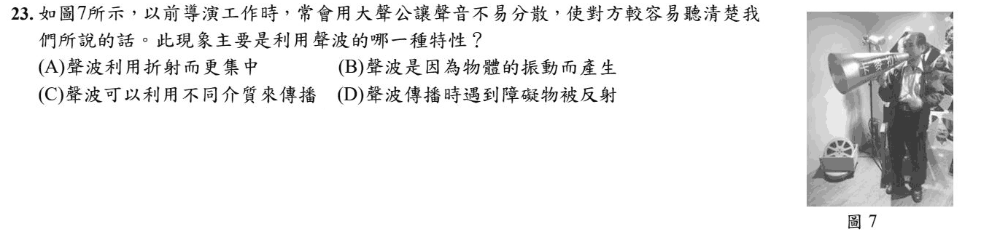
大聲公是一個喇叭形的筒子：聲音往旁邊散的部分，碰到筒壁會反射回來、集中往前方送出去 → (D)。
(A) 折射是聲音進入另一種介質才發生，大聲公裡外都是空氣。(B)(C) 是真的，但不是大聲公的原理。
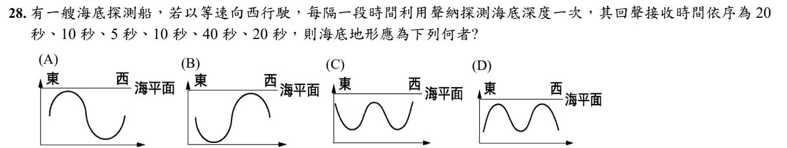
回聲時間愈長 ＝ 海底愈深（聲速固定，深度和時間成正比）。
船往西開，所以第一筆在最東邊。20 → 10 → 5 → 10 → 40 → 20 秒，翻成地形：
中等深 → 變淺 → 最淺（隆起）→ 變深 → 最深（海溝）→ 又淺一點。
圖的左邊是東、右邊是西：先往上隆起、再往下凹到最深 → (A)。
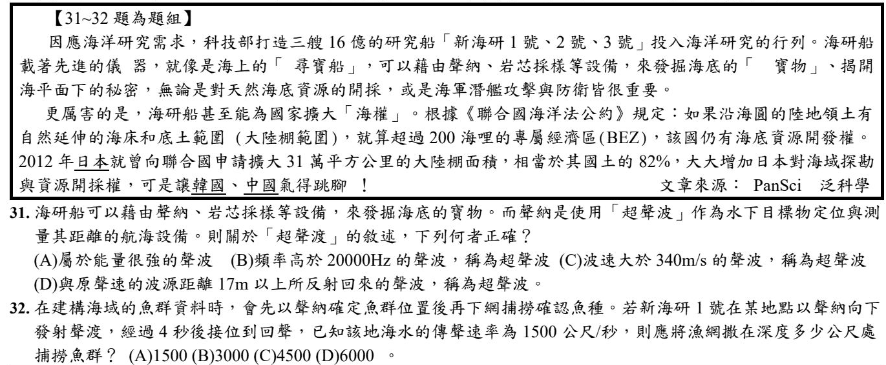
「超」指的是超出人耳可聽範圍的上限（約 20000 Hz），定義完全建立在頻率上。
(A) 能量強弱是響度的事，和超不超聲無關。
(C) 波速由介質決定，不會因為頻率高就變快。
(D) 17 公尺那個數字講的是回聲——聲音來回 34 公尺約 0.1 秒，人耳才分得出是兩個聲音。那是另一個概念。
(D) 是很漂亮的誘餌：它把一個真的、但屬於別題的知識放進來。段考很愛這樣考。
4 秒是來回的時間，單程只有 2 秒。
深度 ＝ 1500 × 2 ＝ 3000 公尺。
(D) 6000 就是忘了除以 2 的答案——這是回聲測距題最大的坑，幾乎每次都有人踩。
看到「發射→接收」「回聲」「聲納」「雷達」，第一個動作永遠是先把時間砍一半。
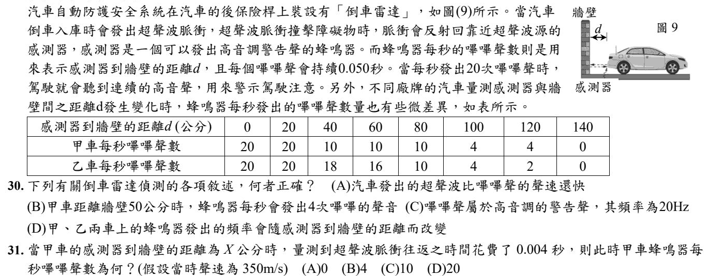
(A) 同一個空氣裡，超聲波和嗶嗶聲聲速一樣。
(B) 查表：甲車 40 公分和 60 公分都是每秒 10 次，50 公分應該是 10 次，不是 4 次。
(C) 「每秒 20 次嗶嗶聲」是嗶嗶聲出現的次數，不是聲音本身的頻率；嗶嗶聲是高音調，頻率遠大於 20 Hz（20 Hz 幾乎聽不到）。
(D) 距離改變，每秒嗶嗶的次數（嗶嗶聲出現的頻率）就跟著改變 ✓
這題的「頻率」有兩種意思：聲音振動的頻率（決定音調）、嗶嗶聲出現的頻率（每秒幾次）。(C) 和 (D) 就是在考你分不分得清楚。
0.004 秒是來回的時間，單程 0.002 秒。
距離 ＝ 350 × 0.002 ＝ 0.7 m ＝ 70 公分。
查表：甲車 60 公分和 80 公分都是每秒 10 次 → 70 公分也是 10 次。
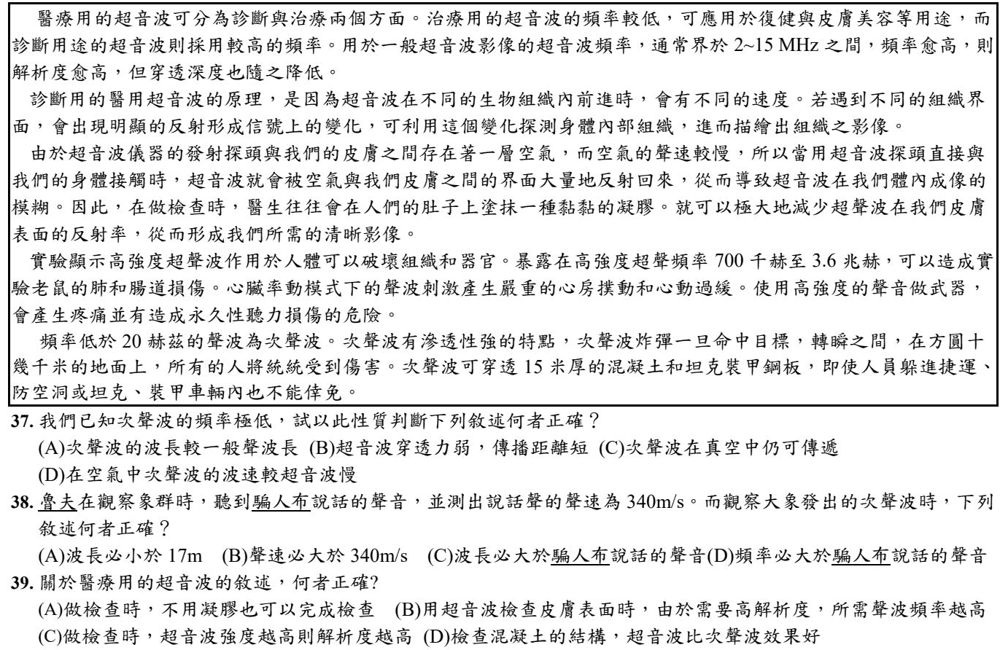
波長 ＝ 波速 ÷ 頻率。同在空氣中波速一樣，頻率極低 → 波長很長 ✓
(B) 題目要你從「頻率低」來推論，這句和次聲波無關。(C) 次聲波也是聲波，真空中不能傳。(D) 同一介質中，次聲波和超聲波波速相同。
次聲波 ＝ 頻率低於 20 Hz。人說話的聲音一定在 20 Hz 以上 → 大象次聲波的頻率比較低。
同在空氣中、聲速一樣，頻率低 → 波長比較長 → (C) ✓
(A) 波長 ＝ 340 ÷ 20 ＝ 17 m，次聲波頻率更低，波長要大於 17 m。(B) 同一空氣，聲速一樣是 340 m/s。(D) 頻率比較低。
文章說：頻率愈高，解析度愈高，但穿透深度降低。檢查皮膚表面不需要穿很深、要看得清楚 → 用高頻率 ✓
(A) 文章說要塗凝膠，不然超聲波會在空氣和皮膚的界面大量反射。(C) 解析度看的是頻率，不是強度。(D) 文章說能穿透 15 米厚混凝土的是次聲波。
第 3 章 ⑧ 多變的聲音（響度、音調、音色）18 題
否。音色由發聲體本身（材質、構造、發聲方式）決定，對應波形，是聲音的「指紋」。
鋼琴和小提琴可以調成一樣高（音調）、一樣大聲（響度），但音色調不成一樣——所以閉上眼睛也聽得出是哪種樂器。
錯。音調只由音叉本身的固有頻率決定——那是音叉的長度、粗細、材質決定的，刻在音叉上的那個「440 Hz」不會因為你敲哪裡而改變。
敲上方或敲下方、敲用力或敲輕，改變的是振幅，也就是響度。
是非題把「音調」換成「響度」就會變成對的。看到是非題，先找出那個可以被替換掉的關鍵詞——出題老師動的就是那個字。
是。這題就是上一題（113 年是非題第 6 題）把「音調」換成「響度」的版本。
音叉的音調固定；敲的位置和力道改變的是振幅，也就是響度。敲在叉臂上方（離底座遠），叉臂擺動幅度比較大，聲音比較響。
⚠️ 補充：響度主要看敲得多用力，題目沒說力道一樣；這題是自行解出的，如果考試遇到類似敘述，請問老師這一題怎麼算。
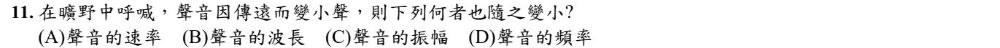
「變小聲」＝響度變小 → 對應振幅變小。
其他三個為什麼不會變？
· 速率：由空氣決定，和你喊多遠無關（都是 340 m/s）
· 頻率：由聲帶決定，傳遠了音也不會變低沉
· 波長：波長 ＝ 波速 ÷ 頻率，上面兩個都沒變，它自然也沒變
聲音傳遠了會變小聲，是因為能量散開到愈來愈大的範圍。散開的是能量，不是音高。
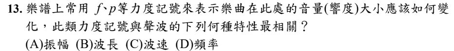
力度記號（f 強、p 弱）講的是音量大小 ＝ 響度。響度由振幅決定 → (A)。
(D) 頻率決定的是音調（高低）；(B)(C) 波長、波速和大小聲無關。
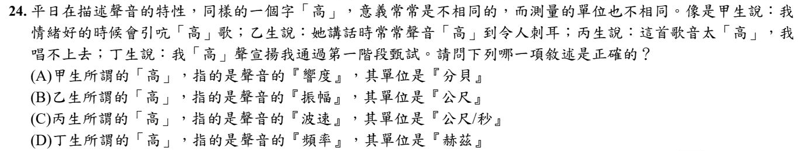
先把四句話翻譯成物理：
甲「引吭高歌」＝大聲唱 → 響度 ✓
乙「高到令人刺耳」＝聲音很尖 → 音調（不是振幅）
丙「音太高唱不上去」＝音高 → 音調（不是波速）
丁「高聲宣揚」＝大聲說 → 響度（不是頻率）
只有 (A) 的判讀和單位都對。
這題就是這一章的縮影：中文的「高」是一個字，物理上是兩件事。判斷方法是問「這句話在描述音量還是音高」，再去配單位。
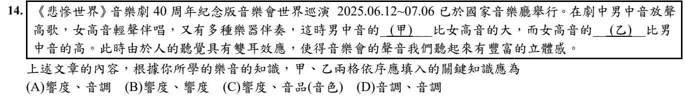
甲：男中音「放聲高歌」、比女高音大 → 大小聲 → 響度。
乙：女高音比男中音高 → 音高 → 音調。
→ 響度、音調 (A)。和 113-24 一樣：先問自己「這是在講大小聲，還是在講高低」。
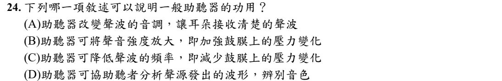
助聽器的工作是把聲音放大 → 振幅變大 → 鼓膜受到的壓力變化變大 → 聽得到 ✓
(A)(C) 改變音調或頻率，聲音會走樣，不是助聽器要的。(C) 而且壓力變化變小會更聽不到。(D) 分析音色是大腦的工作，助聽器沒有這個功能。
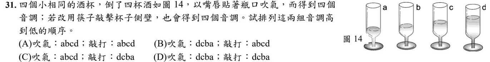
兩種玩法，振動的東西不一樣：
吹氣：振動的是杯子裡的空氣柱。空氣柱愈短，音調愈高。d 酒最多、空氣柱最短 → 吹氣由高到低 dcba。
敲杯子：振動的是杯子連同裡面的酒。裝得愈多、愈重，振動愈慢，音調愈低。a 酒最少 → 敲打由高到低 abcd。
→ (B)。
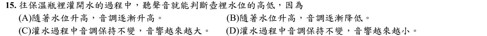
灌水時發聲的是瓶子裡的空氣柱。水位升高 → 空氣柱變短 → 振動變快 → 音調升高 ✓
和上一題吹酒杯是同一個道理：空氣柱愈短，聲音愈尖。
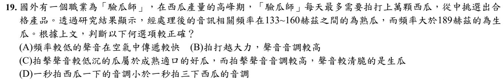
文章：熟瓜 133～160 Hz（頻率低 → 音調低沉），生瓜大於 189 Hz（頻率高 → 音調較高、清脆）→ (C) ✓
(A) 同一空氣中，各種頻率的聲音傳得一樣快。(B) 拍得用力改變的是響度，不是音調。(D) 一秒拍幾下是「拍的次數」，不是每一聲的音調。
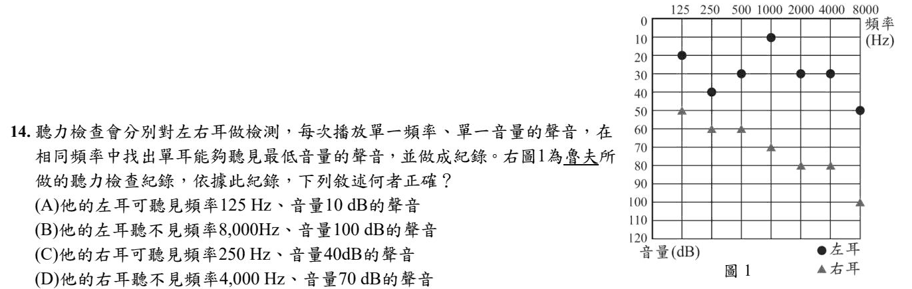
先讀懂圖：每個點代表「這個頻率，最小要多大聲才聽得到」。聲音的分貝大於等於那個點才聽得到，小於就聽不到。（●左耳、▲右耳）
(A) 左耳 125 Hz 至少要 20 dB，10 dB 聽不到 ✗
(B) 左耳 8000 Hz 至少要 50 dB，100 dB 聽得到 ✗
(C) 右耳 250 Hz 至少要 60 dB，40 dB 聽不到 ✗
(D) 右耳 4000 Hz 至少要 80 dB，70 dB 聽不到 ✓
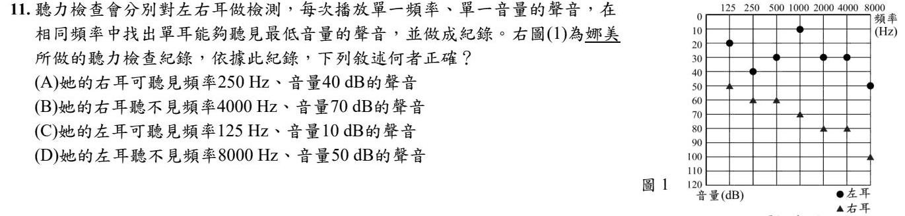
和 113 年那題同一張圖，選項換了位置。規則一樣：分貝 ≥ 那個點才聽得到。
(A) 右耳 250 Hz 至少要 60 dB，40 dB 聽不到 ✗
(B) 右耳 4000 Hz 至少要 80 dB，70 dB 聽不到 ✓
(C) 左耳 125 Hz 至少要 20 dB，10 dB 聽不到 ✗
(D) 左耳 8000 Hz 剛好 50 dB 就聽得到，不是聽不到 ✗
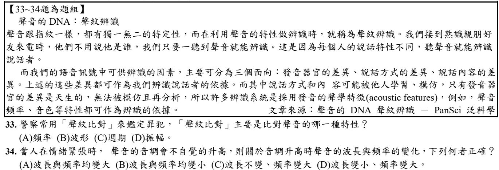
頻率、振幅都可以模仿——你可以講得跟別人一樣高、一樣大聲。
但波形是由發音器官的形狀決定的（聲帶、口腔、鼻腔），那是天生的、模仿不來的，所以才拿它來當「聲音的指紋」。
波形對應的就是音色——這一章三個名字裡最少被考、但最有意思的一個。
音調升高 → 頻率變大。
再看波長：波長 ＝ 波速 ÷ 頻率。波速在同一個空氣裡不會變，分母的頻率變大 → 波長變小。
(C) 錯在以為波長是獨立的。只要波速固定，波長和頻率就是綁死的一對，一個變大另一個一定變小。
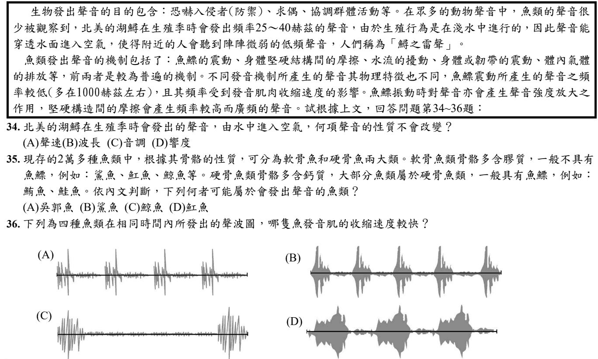
聲音換介質時，頻率不變（由發聲的湖鱘決定）→ 音調不變 ✓
會變的：聲速（水 → 空氣變慢）、波長（＝ 聲速 ÷ 頻率，跟著變短）、響度（穿過水面時能量大量損失，所以人們只聽到「微弱」的聲音）。
文章：最普遍的發聲方式是魚鰾振動。軟骨魚（鯊魚、魟魚、鯨魚等）一般沒有魚鰾，硬骨魚一般有魚鰾。
吳郭魚是硬骨魚 → 有魚鰾 → 可能發出聲音 → (A)。
順便一提：鯨魚其實是哺乳類，不是魚。但這題照文章分類作答就好。
文章：魚鰾聲音的頻率受發音肌收縮速度影響——肌肉收縮一次就「咚」一下，收縮得愈快，同樣時間裡的聲響就愈多。
四張圖時間一樣長，數一數聲響（一叢一叢的波）：(A) 4 個、(B) 5 個、(C) 2 個、(D) 3 個 → (B) 最快。
⚠️ 補充：這題是自行解出的，也有人會改看每一叢裡面的波有多密；如果考試遇到類似的圖，請問老師這一題怎麼看。